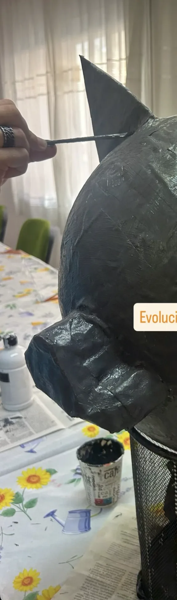
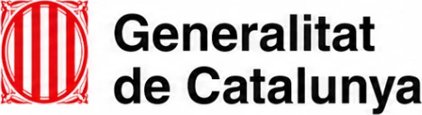
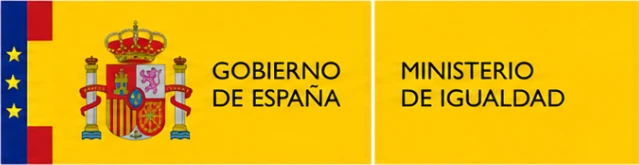
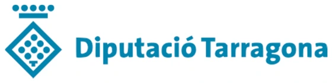
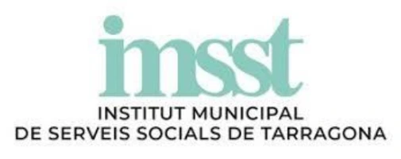

L'associació
Els projectes es construeixen entre persones.
Professionals, voluntariat, famílies, entitats i agents del territori: una xarxa diversa que aporta coneixement i mirades complementàries per respondre a les necessitats reals de cada comunitat.

Una manera de treballar connectada
Sumem persones, coneixement i territori
- Coordinació: connectem agents i necessitats.
- Col·laboració: treballem de manera compartida.
- Coneixement compartit: posem en comú experiències i aprenentatges.
- Territori: actuem des de la realitat de cada context.
Equip humà
Perfils que s'adapten a cada projecte
La composició de l'equip canvia segons les necessitats de cada projecte, sempre amb personal qualificat i compromès amb el bon tracte.
Educació en el lleureMonitors i educadors de lleure.
Educació socialAcompanyament socioeducatiu.
Psicologia i pedagogiaMirada emocional i educativa.
Coordinació de projectesOrganització i relació amb el territori.
VoluntariatPersones que aporten temps i energia.
Perfils especialitzatsSegons les necessitats de cada projecte.
Xarxa i col·laboracions
Institucions i entitats vinculades
La xarxa ens permet sumar recursos, coneixement i oportunitats al territori.







Una xarxa que creix amb cada projecte
Cada projecte pot incorporar nous perfils, aliances i recursos segons les seves necessitats.